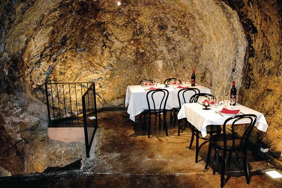

Actualites diverses de l'empire
Musique du moment
Ce groupe venu de la grande cite de Field Castle vous ravira les oreilles et embellira votre journée, puissant et unique, ces jeunes hommes ont su se démarquer dans un monde régit par plus de violences.
Nouvelles relatives aux humains
La grande battu pour chasser les loups garous, qui sevissent a Garden Corner et annihilent les troupeaux, tourne mal, nous deplorons 32 disparu et 13 morts sur la centaine d'hommes partit en chasse. C'est une tragédie et de grands hommages seront organise la semaine prochaine par les dirigeants de Garden Corner.
La nouvelle invention du docteur Vagaponk fait fureur. Ce nouvel outil permet de gagner un temps considerable sur la recolte des champs. Peu chere et tres facile d'utilisation, c'est une nouvelle reussite pour le genie de l'empire deja mainte fois decore par l'empereur Nastoleis IV.
Les Grandes halles de la capitale de l'empire reouvre leur portes dans un mois. Tout les emplacements marchands sont deja pris, et avec l'arrive de vendeurs venu des 4 coins du monde vous permettra de decouvrir tout un tas de cultures dont vous n'aviez même pas connaissance. Alors rendez vous a l'ouverture et venez nombreux.
Etablissement recommande du mois: la non moins celebre Brasserie Malts Magiques


Très peu recommandable a son ouverture du fait de sa place dans les contrees de Farmfold, un endroit mal frequente, cette etablissement a su, avec ennormement de travail, faire sa renommee dans tout l'empire, meme les ministres imperiaux y passent pour se restorer en rentrant de voyage diplomatique, peu a peu la region a su se reinventer grace a la gloire de cette etablissement qui represente les valeur de l'empire a se depasser pour atteindre les sommets.
Petites annonces
C'est bientot l'heure des vendanges, la domaine de la famille Dragonlance recrute pour recolter le raisin, paye 45 ecu le kilo
Bonjours je me presente je m'appelle Ernest Francbourg, j'ai besoin d'aide pour erradiquer un nid de batagueurs sauvage s'etant installe non loin de chez moi, ils nous mettent en peril moi et ma famille, la remuneration est de 8 000 ecu pour la destruction du nid
Recherche de fauconnier aux services de poste de l'empire, 5 postes libres nourrit, loger avec un salaire de 800 ecu par mois. A la condition d'etre de race humaine.